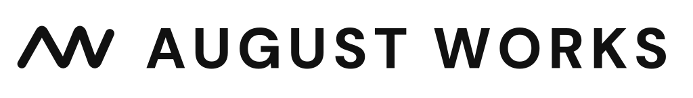

Blentera is an AI-native operating layer for companies running teams of agents. It brings agents, shared company knowledge, workflows and human oversight into one system, so a small team can delegate more work without losing visibility or control.
Building towards a positive future.
Danish Impact / Tech Entrepreneur & Waymaker
Focused on AI-native companies, human-centric innovation and sustainable business.
When I’m at my best
I thrive when the challenge is new or complex and the direction is still taking shape.
I learn quickly, see possibilities and approach problems from different angles. I form my own view, question established thinking and enjoy taking the lead on strategy and innovation.
I explore widely, but I also value structure. I turn ideas into a clear direction people can understand and build on. When I’m genuinely engaged, I bring energy and persistence to the work.
In teams, I work best with autonomy, candid discussion and bold people. Conversation sharpens my thinking, while space to think independently helps me develop ideas further.
The shift I see
The next decade will test even the strongest market positions.
AI is changing how companies are built and run. Even market leaders may face unexpected competition from companies a fraction of their size. The challenge is turning AI into a core capability that creates greater value for customers and strengthens the business.
Large organisations can combine their scale and customer trust with startup-like agility. Startups can gain capabilities that once required much larger teams. Both can increase productivity, use capital more efficiently and bring the right ideas to market faster.
But greater capacity doesn't automatically make a company more competitive. When companies put products before customers, AI can amplify that mistake many times over.
Realising AI's potential means rethinking how companies are organised and led. That takes a customer-centric mindset, a culture that innovates and adapts quickly, and the judgement to prioritise and know when to stop.
The real opportunity isn't AI itself. It's the companies we can build around it.
Explore my perspectives
Rethinking the company
If we built the company today, would we build it the same way? That is the question I think more leadership teams should be asking...Europe at a crossroads
The model race matters. It is not the whole race. Europe should keep investing in research, infrastructure and AI companies...What I’m building

August Works helps owner-led businesses turn AI into capacity they can actually use. We build AI employees around the company’s knowledge and workflows, so the same team can get more done while knowledge stays in the business.
HumaMap makes how people work visible and useful. It helps people explain their working style, teams understand how they work together and leaders make better decisions about roles, collaboration and change.
Waymakıng™
Waymaking is my approach to turning ambitious ideas into tested ventures. Start with a real human need, validate demand before overbuilding, use AI to reach a first viable version faster, and build people, planet and profit into the business from the start.
About
I’ve always been curious about what’s changing in business and technology. My interests have never fit neatly into one field.
At 18, I left school to run a VR arcade in Copenhagen, where I was responsible for the business and a team of around ten people. You don’t learn that at business school.
Since then, I’ve worked across operations, business development, product development and new ventures. I enjoy the variety, and I’ve never felt the need to define myself by a single job title.
Get to know meWorking together
I do my best work with people who care more about the outcome than being right.
I like ambitious people with their own point of view: founders, builders, leaders and specialists who will challenge an idea, improve it and then move.
Good collaboration for me is direct, low-ego and high-ownership. We should be able to disagree, make a decision, test it against reality and change our minds when the evidence says we should.
With curiosity and optimism,
August